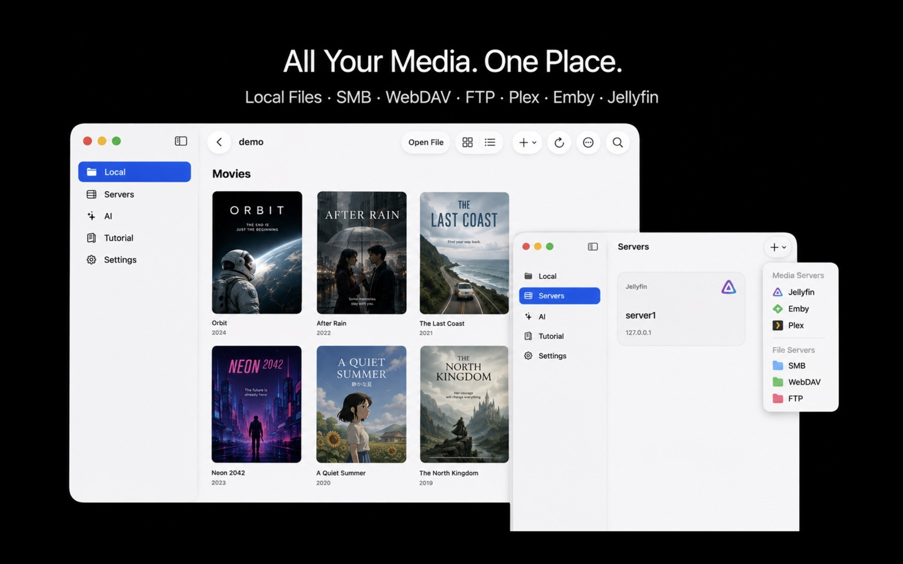
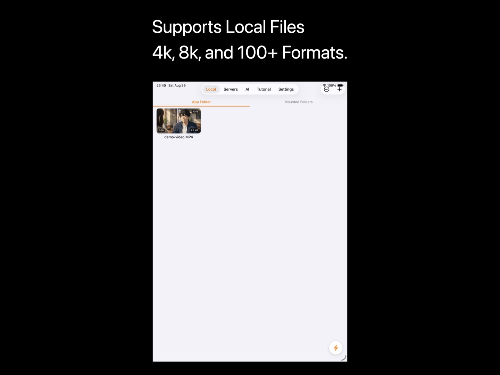
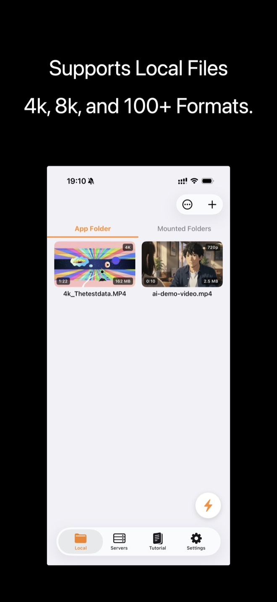

Summarize long videos into seconds.
Drop any file into KenjaPlayer's AI tab and it transcribes the whole video, then writes a structured summary: a quick overview plus a chapter-by-chapter timeline with timestamps. Tap a chapter to jump straight there. Two hours of footage, five minutes of reading — and none of it ever leaves your device.

Overview first, chapters second
Each summary opens with a short overview of what the video is about, followed by a timestamped chapter timeline. It's the format your brain already uses: what is this, and where is the part I care about?
- Full transcription — the complete spoken content, recognized on-device.
- Overview — a tight abstract of the whole video.
- Chapter timeline — key moments with timestamps you can tap to navigate.
- Long-video native — chapters are summarized in rolling passes, so length doesn't break it.

Powered by Apple Intelligence
Summaries run on the Foundation Models that ship with Apple Intelligence — the same on-device large language model that powers Apple's own features. No API keys, no tokens, no per-minute cloud bills. Just your Mac, your video, and a model that was already on the chip.
- Zero marginal cost — summarize as much as you like; there's no meter running.
- Zero data sharing — transcripts and summaries are generated and stored locally.
- Graceful fallback — on devices without Apple Intelligence, transcription and translation still work; summaries are simply skipped.

Take the text with you
A summary you can't export is a dead end. KenjaPlayer's isn't.
- Export SRT — the timed transcript drops out as a standard subtitle file for editors and archives.
- Export Markdown — summaries export cleanly for notes, docs or your second brain.
- Plain text too — when Markdown is overkill, grab the text.
Summaries, questions
What kinds of videos does it summarize?
Do summaries need Apple Intelligence?
How long can a video be?
Stop watching videos
you could be reading.
Free download — summaries included in the free AI allowance.
NO SUBSCRIPTION · NO ACCOUNT · NO TRACKING